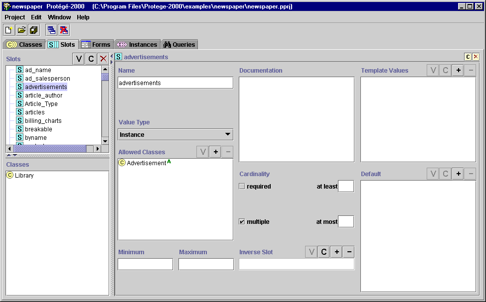

The Slots Tab
The Slots Tab

The Slots tab provides a single window in which you may view, create, and
edit slots. Although slots are often thought of as being attached to a
class, they can be defined and manipulated independently, and can exist without
any relationship to classes.
An example of the Slots tab is shown below. The window consists of three
panes:
- The Slots pane in the upper left shows all the slots in the project and allows you to
edit existing slots, create new slots, view back-references for slots, and delete
slots. For more information, see the Slot
Buttons.
- The Classes Pane at the Slots Tab in the lower left shows the all the
classes that have the slot attached. This is a view-only window. To view or
manipulate classes, use the Classes Tab. As mentioned above, a slot can exist
without being attached to any class.
Note: If you cannot see the Classes Pane, your window may be too small. You
can see the pane by enlarging your window or by dragging the slider bar at
the bottom of the Slot Menu. See Working
With a Small Window for more information.
- When a single slot is selected, the Edit pane on the right contains the Slot
Form
for the selected slot. The Slot Form allows you to: name the
slot,
choose its cardinality and value type, define constraints, defaults, and
maximum and minimum values, as well as provide a brief description. The Slot Form
can be displayed as a
separate window by clicking the View
 slot button in the Slots Pane. The Slot Form
can also be accessed from the Templates
Slots pane in the Classes Tab.
slot button in the Slots Pane. The Slot Form
can also be accessed from the Templates
Slots pane in the Classes Tab.

For information about the Slots Tab user interface and about accomplishing specific
tasks, see the Slots Table of
Contents.
Next: The Slot Buttons
Slots Table of Contents